1) Decida se cada afirmação a seguir é verdadeira ou falsa e marque com caneta sua resposta no quadro abaixo. Atenção: responda todos os itens, use "N = não sei" caso você não saiba a resposta. Cada resposta certa vale 0.3, cada resposta errada vale -0.2, cada resposta N vale 0. Respostas confusas e ou rasuradas valerão -0.2.
1.a)
Para todo par de vetores u e w de
 vale o seguinte raciocínio:
vale o seguinte raciocínio:
Falso. Justificativa: considere os vetores w=i e u=j. Observe que 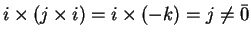. Observe que, 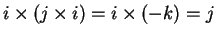, logo 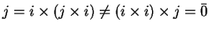.
1.b)
Considere vetores v, y e w de
 tais que
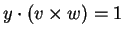. Então
tais que
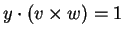. Então
 .
.
Falso. Justificativa: 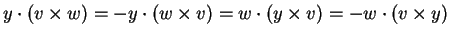. (V. também pode interpretar em termos de troca de duas linhas em um determinante).
1.c)
Considere vetores v, y e w de
 tais que
tais que
 . Então y é ortogonal a w.
. Então y é ortogonal a w.
Falso. Justificativa: faça y=w, então o produto 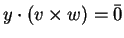, observe que o vetor 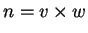 é ortogonal a w e, portanto, 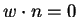. Obviamente, os vetores y e w não são ortogonais (são iguais!).
1.d)
Existem dois planos  e
e  de
de
 cuja
interseção consiste em um único ponto.
cuja
interseção consiste em um único ponto.
Falso.
Justificativa:
Para a interseção de dois planos de
 existem três possibilidades: (a) um plano (se os dois planos são iguais),
(b) uma reta (se os planos não são paralelos), ou (c) o conjunto
vazio (os planos são paralelos e distintos).
existem três possibilidades: (a) um plano (se os dois planos são iguais),
(b) uma reta (se os planos não são paralelos), ou (c) o conjunto
vazio (os planos são paralelos e distintos).
1.e)
Considere vetores y,v e w de
 tais que
tais que
 e
e
 . Então
. Então
 .
.
Falso.
Justificativa: Considere, por exemplo, y=i, w=i+j e v=k,
então,
 ,
,
 , mas
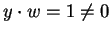.
, mas
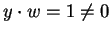.
1.f)
Considere vetores w e v de
 . Se
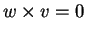então o valor absoluto de 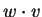 é 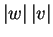.
. Se
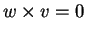então o valor absoluto de 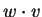 é 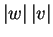.
Verdadeiro.
Justificativa:
Se um dos vetores é o vetor nulo a afirmação é obvia.
Suponhamos, portanto, que
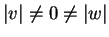. Então,
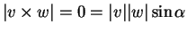 (onde 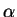 é o ângulo
formado por w e v). Logo,
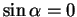, e 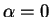 ou  .
Portanto,
.
Portanto,
1.g)
Considere o sistema

Falso.
Justificativa:
Considere os planos
1.h)
Considere vetores y,v e w de
 .
Então
.
Então
Verdadeiro.
Justificativa:
observe que, pelas propriedades do produto escalar,
1.i)
Considere a reta r que contém o ponto
P=(p1,p2,p3)
e é paralela ao
vetor v, e a reta sque contém ao ponto
Q=(q1,q2,q3) e é paralela ao
vetor w. Seja
 .
Suponha que
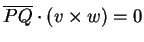.
Então a distância entre as retas é zero.
.
Suponha que
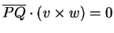.
Então a distância entre as retas é zero.
Falso. Justificativa: É suficiente considerar duas retas paralelas distintas, por exemplo, r=(t,t,t) e s=(1+t, t,t). Podemos tomar v=w=(1,1,1), que é um vetor diretor das duas retas. Considere P=(0,0,0) e Q=(1,0,0), e o vetor 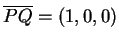. Claramente (nem é necessário fazer contas), (pois 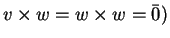.
| Itens | V | F | N | |
| 1.a | F | |||
| 1.b | F | |||
| 1.c | F | |||
| 1.d | F | |||
| 1.e | F | |||
| 1.f | V | |||
| 1.g | F | |||
| 1.h | V | |||
| 1.i | F |
2)
Considere a reta r definida pela interseção dos planos
 e
e  ,
,
2.a)
Determine um vetor diretor da reta r.
2.b)
Determine uma equação paramétrica de r.
2.c)
Encontre um terceiro plano  (diferente de
(diferente de  e
e  )
que contenha a r (isto é,
)
que contenha a r (isto é,
 é igual à reta r).
é igual à reta r).
2.d) Determine a equação cartesiana do plano
que contém a reta
r e o ponto (1,2,1).
2.e) Determine a equação cartesiana do plano  perpendicular a r contendo o ponto (1,2,1).
perpendicular a r contendo o ponto (1,2,1).
Resposta:
Resolvemos o sistema
Para resolver o item c, é suficiente considerar o plano y=2/3.
Para encontrar a equação do plano , considere
os vetores
v=(1,0,-1) e o vetor
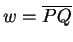 determinado pelos pontos
P=(0,2/3,-1/3) de r e Q=(1,2,1). Observe
w=(1,4/3,4/3). Considere o vetor u=(3,4,4). Os vetores
u e v são paralelos a , logo um vetor
normal de é
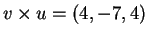.
Logo, a equação de é da forma
4x-7y+4z=d, onde d é determiando pela condição
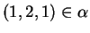.
Portanto,
4-14+4=-6=d.
Logo,
Para o item (e). Um vetor normal do plano é o vetor
diretor de r, isto é, (1,0,-1). Logo  é
da forma x-z=d, onde d é determinado por
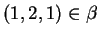,
logo d=0 e
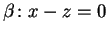.
é
da forma x-z=d, onde d é determinado por
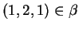,
logo d=0 e
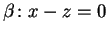.
3)
Considere a reta r de equação cartesiana
3.a)
Determine uma equação paramétrica de r.
3.b) Determine a posição relativa das retas r e s(concorrentes, reversas, paralelas, iguais).
3.c) Calcule a distância entre r e s.
Resposta:
Para calcular a equação paramétrica é suficiente
resolver o sistema. Escalonando obtemos
Obviamente, as retas r e s não são paralelas: seus vetores diretores são u=(1,-1,1) e v=(-2,1,2), que não são paralelos. Logo as retas são reversas ou concorrentes.
Considere o ponto 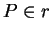, P=(0,2,0), e 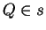, Q=(1,0,1). As retas serão reversas se 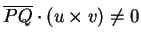, caso contrário as retas serão concorrentes.
Observe que
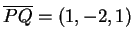, Temos
Outra possibilidade de resolução é considerar o sistema
Finalmente, para calcular a distância d entre as retas
usamos a fórmula
4)
Considere o plano
 .
.
4.a) Determine
a equação cartesiana do plano  paralelo a
paralelo a
 que contém a origem.
que contém a origem.
4.b) Calcule a distância entre  e
e  .
.
4.c)
Determine a equação cartesiana do plano
 perpendicular a
perpendicular a  que contém os pontos
(1,0,0) e (0,0,-1).
que contém os pontos
(1,0,0) e (0,0,-1).
4.d)
Calcule o ponto do plano  mais próximo do ponto (1,0,0).
mais próximo do ponto (1,0,0).
4.e)
Ache um ponto X no plano  da forma (x,0,z) tal que os pontos
P=(1,0,0),
Q=(0,0,-1) (P,Q no plano
da forma (x,0,z) tal que os pontos
P=(1,0,0),
Q=(0,0,-1) (P,Q no plano  )
determinem um triângulo retângulo cujos catetos são
PQ e QX.
)
determinem um triângulo retângulo cujos catetos são
PQ e QX.
Resposta:
Para o item (a).
O plano  tem o mesmo vetor normal de
tem o mesmo vetor normal de  , logo
, logo
Para resolver o item (b),
calcular a distância entre  e
e  é suficiente calcular
a distância da origem a
é suficiente calcular
a distância da origem a  . Para isto, por exemplo,
encontraremos o ponto A de interseção da reta (t,2t,-t)
(a reta normal a
. Para isto, por exemplo,
encontraremos o ponto A de interseção da reta (t,2t,-t)
(a reta normal a  contendo
o ponto (0,0,0)) e o próprio plano
contendo
o ponto (0,0,0)) e o próprio plano  .
O ponto de interseção ocorre quando
.
O ponto de interseção ocorre quando
No item (c),
para determinar o plano  observe que os vetores
(1,2,-1) (o vetor normal a
observe que os vetores
(1,2,-1) (o vetor normal a  ) e (1,0,1)(o vetor determinado pelos pontos (1,0,0) e (0,0,-1))
são paralelos a
) e (1,0,1)(o vetor determinado pelos pontos (1,0,0) e (0,0,-1))
são paralelos a  . Logo um vetor normal a
. Logo um vetor normal a  é
é
Para o item (d), observe que
o ponto de  mais próximo de (1,0,0)é obtido como a interseção da reta
,
(a reta perpendicular a
mais próximo de (1,0,0)é obtido como a interseção da reta
,
(a reta perpendicular a  contendo B=(1,0,0))
e o plano
contendo B=(1,0,0))
e o plano  .
Esta interseção ocorre quando
.
Esta interseção ocorre quando
Para o último item,
considere o vetor
.
Observe que, necessariamente, o vértice X
está no plano
perpendicular a (1,0,1) que contém
Q=(0,0,-1). Este plano tem equação cartesiana